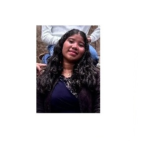
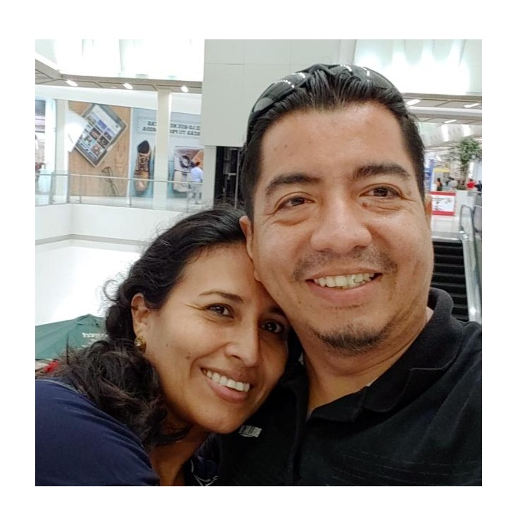
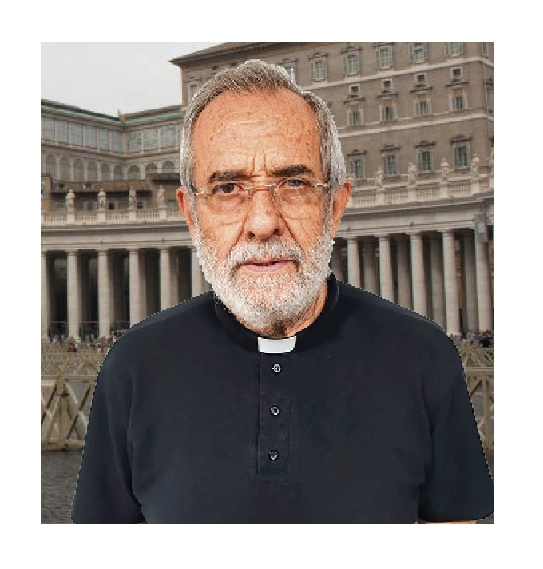

Testimonios
Los jóvenes que participan en la Pastoral de Post-Confirmación han descubierto la alegría de vivir la fe en comunidad. Los matrimonios que los acompañan dan testimonio de una familia cristiana auténtica, mostrando que es posible vivir el Evangelio en la vida cotidiana.

Valentina
Chica“La Post-confrimación me ha ayudado mucho en mi comportamiento con mis padres, porque he aprendido a realzar las virtudes que Dios nos regala. Incluso ellos han notado un cambio positivo en mi forma de ser, gracias a la palabra de vida que me transmiten mis padrinos la cual me llega al corazón.”

Alex y Adriana
Padrinos“La experiencia semanal en la Pastoral ha permitido crear un vínculo de amor y alegría con jóvenes que, aunque no son familia de sangre, se convierten en hermanos en la fe. Este camino ha ayudado a dejar el egoísmo, abrirse al servicio y reconocer que es el Espíritu de Dios quien guía cada encuentro, incluso en medio del ajetreo. Como matrimonio, la participación fortalece la reconciliación, el aprendizaje mutuo con los ahijados y la memoria viva de lo que el Señor ha hecho en sus vidas. Todo se vive desde la voluntad de Dios, en entrega constante, con la certeza de formar parte de la Iglesia. ”

P. Julián Ballesta
Presbítero“Ver a los jóvenes y padrinos de la Post-Confirmación es un regalo, el escrute de la palabra, los testimonios de los chicos, el campamento, me alegro mucho con todo esto. Dios es fiel en todo momento.”